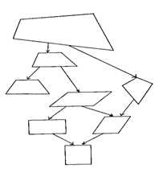

Teacher's Note
Subject: Maths
Class: 3
Activity Title: Quadrilateral
Activity Code: III M 1
Recommended Week: 1
Correspondig textbook chapter: Quadrilateral
Learning area: Geometry
Learning achivevement: Naming, learning and writing Quadrilateral's line and angle
Elaboration matrix: Differentiate Quadrilateral's line and angle
Objective of activity: Naming, learning and writing Quadrilateral's line and angle
How to play: Make quadrilateral of different activities in Geo-board. In lesson you can play the game "Searching geometric term in bee hives." Press the 'Game' button in between 'Exercise' and 'Help'. In this game you have to search for Geometric term and click them. If you press wrong button press 'Esc' key on keyboard and start searching for correct terms. You can find English and Nepali geometric term in bee hives.
Self-assessment: You can see the scoreboard for correct and incorrect answers.
Recommended pre-activity:

Make some geometric figures (as shown above) in black-board. Students make them in their copy. Make students write the figure's features.
Recommended post-activity: Ask the students to name each angle and side of the quardilateral drawn in the previous step.
Recommended e-library activity:
Recommended group activity:
Recommended homework assignment:
Similar/related activities:
Teaching tips:
Useful websites: